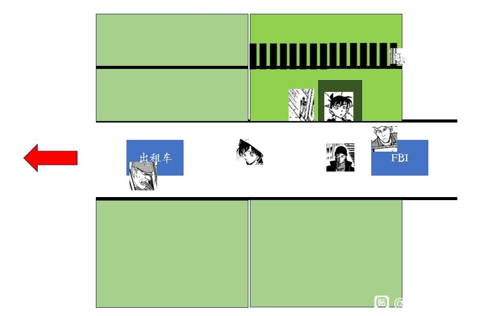
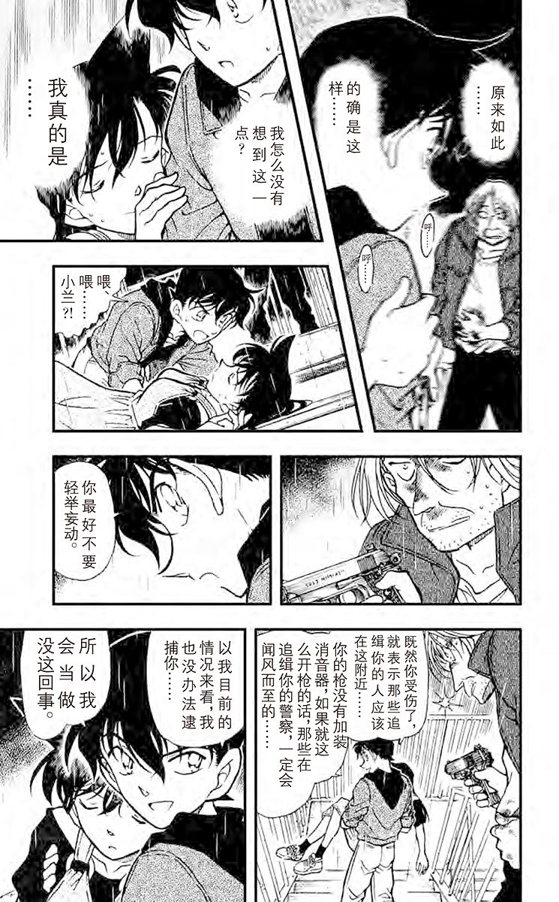

昨日与@灵13syn777 对贝新论与贝魔论进行了一些讨论，我在此重新整理了一些观点。（同时感谢@贴吧用户_0Q8721R 对贝新论观点的整理）
我的分析思路借鉴了B站up万钟求的部分观点，但有所不同，即我认为新一先进入大楼，杀人魔后进入大楼。理由是【新一看见血迹一定会报警】【但新一直接进入大楼了】【有血迹新一一定会看见】，所以【新一进入时，还没有血迹】【而小兰进入时有】，进楼顺序为【新-魔-兰】
1、关于消音器问题
贝新论认为，【柯南觉得杀人魔是用消音器手枪自杀】【但现场杀人魔已经丢弃消音器】【新一判断是否自杀的原因中不包括消音器】得到【新一不在现场】，并举例了天空树作为例子。
贝魔论认为，【不论是新一还是警方，都没有把这件事当成自杀过，公布自杀只是大众说法】【柯南的设想中，杀人魔并不是枪击太阳穴，而是正面枪击，这与天空树“消音器的太阳穴自杀矛盾”是不相符合的】【杀人魔完全可以下楼捡起消音器】
因此，贝魔论完全可以认为，杀人魔“自杀的现场”其实是在原有腹部枪伤上，用消音器继续补枪（而不是太阳穴），还可以混淆秀一对于枪伤的判断。
2、关于杀人魔重新举枪
贝新论认为，在“新一”嘴炮后杀人魔仍然举枪，说明其确实是大众眼中专杀少女的杀人魔。
贝魔论认为，此时新一已经背对杀人魔并抱起小兰，因此杀人魔枪口指向的是新一而非小兰，与大众杀人魔特征相违背。
此外，贝魔论不认为仅仅小兰拯救杀人魔就能感化TA，应该是【小兰的冲动型拯救+新一的善后能力】才完全打动杀人魔。
3、关于新一的去向问题
贝魔论不存在这个问题，但贝新论应该提出一些假说。
我看完了贝新论，最有效的假说应该是【新一去了手帕阳台，随后直接报警，等警察赶到后，与警察一起进入现场，发现了“自杀”的杀人魔】
但这个说法仍然面临问题，最大的问题是【新一登上手帕阳台后，会看到什么】
A 看到小兰在外面，则新一与小兰应该产生互动，但并没有展现出来。
B 看到秀一，但这是不可能的。
C 看见出租车跑了，误以为小兰已经回家，自己被放鸽子，可能性也比较低。
贝新论只能从AC中选择，考虑到新一后来咧嘴对小兰笑，并不像被放鸽子（参见水族馆新一被鸽，非常不满），可以排除C，于是只剩下A，但A情况下，捡手帕的新一看见楼下一片祥和，又失去了立刻报警理由，只能是拿完手帕后报警。
于是，贝新论如果成立，必然有：
【新一拿手帕，看见小兰还在门外，新兰不互动】
【新一下楼，此时秀兰互动，兰去了对面楼梯】
【新一回来时发现血迹，且小兰失踪，于是报警】
这样虽然留下了最后小兰是怎么又和新一在一起的空白，但还是勉强解释得通的。
然而漫画中存在另一个该死的镜头，秀兰对话时小兰看向楼上，【看到了无风而瘫在阳台上的手帕】，即秀一时间段新一并没有拿到手帕，因此选项A同样失败。
新一的动作空间变为空集，于是贝新论不成立，新一只有进入对面楼梯一个选择，故事变为贝魔论。
4、其他疑点
贝姐的捂肚子/腰部，贝新贝魔都说得通。
杀人魔的“去怪上帝吧”（相信/讽刺），贝新贝魔都说的通。
雨伞由谁携带都可以（新一/杀人魔），楼梯决战时慌了就丢掉雨伞，同样贝新贝魔都说的通。
柯南更倾向于回忆金苹果案件，是因为柯南刚刚委托博士调查了莎朗和克莉丝，于是希望向小兰询问更多事情（习惯，喜好，什么都行），而柯南视角里，金苹果案件才是莎朗的高参与案件。（当然，解释为柯南无楼梯记忆也可以），同样贝新贝魔都说的通。
画风问题，由于下雨，头发眉毛的画法会有一些变化，也可以解释为贝新，两者都可解释。
新一的【画外音】其实是莎朗所说，粗对话框表示画外音，这是漫画中多次出现的，并不能作为证据。
闪电前后，小兰先没看血迹后看到血迹，两者必有一错，贝新认为血迹错，贝魔认为没有血迹错，因此闪电没有贝新或贝魔的倾向。
（以上这些证据并不倾向任何一方。）
我的分析思路借鉴了B站up万钟求的部分观点，但有所不同，即我认为新一先进入大楼，杀人魔后进入大楼。理由是【新一看见血迹一定会报警】【但新一直接进入大楼了】【有血迹新一一定会看见】，所以【新一进入时，还没有血迹】【而小兰进入时有】，进楼顺序为【新-魔-兰】
1、关于消音器问题
贝新论认为，【柯南觉得杀人魔是用消音器手枪自杀】【但现场杀人魔已经丢弃消音器】【新一判断是否自杀的原因中不包括消音器】得到【新一不在现场】，并举例了天空树作为例子。
贝魔论认为，【不论是新一还是警方，都没有把这件事当成自杀过，公布自杀只是大众说法】【柯南的设想中，杀人魔并不是枪击太阳穴，而是正面枪击，这与天空树“消音器的太阳穴自杀矛盾”是不相符合的】【杀人魔完全可以下楼捡起消音器】
因此，贝魔论完全可以认为，杀人魔“自杀的现场”其实是在原有腹部枪伤上，用消音器继续补枪（而不是太阳穴），还可以混淆秀一对于枪伤的判断。
2、关于杀人魔重新举枪
贝新论认为，在“新一”嘴炮后杀人魔仍然举枪，说明其确实是大众眼中专杀少女的杀人魔。
贝魔论认为，此时新一已经背对杀人魔并抱起小兰，因此杀人魔枪口指向的是新一而非小兰，与大众杀人魔特征相违背。
此外，贝魔论不认为仅仅小兰拯救杀人魔就能感化TA，应该是【小兰的冲动型拯救+新一的善后能力】才完全打动杀人魔。
3、关于新一的去向问题
贝魔论不存在这个问题，但贝新论应该提出一些假说。
我看完了贝新论，最有效的假说应该是【新一去了手帕阳台，随后直接报警，等警察赶到后，与警察一起进入现场，发现了“自杀”的杀人魔】
但这个说法仍然面临问题，最大的问题是【新一登上手帕阳台后，会看到什么】
A 看到小兰在外面，则新一与小兰应该产生互动，但并没有展现出来。
B 看到秀一，但这是不可能的。
C 看见出租车跑了，误以为小兰已经回家，自己被放鸽子，可能性也比较低。
贝新论只能从AC中选择，考虑到新一后来咧嘴对小兰笑，并不像被放鸽子（参见水族馆新一被鸽，非常不满），可以排除C，于是只剩下A，但A情况下，捡手帕的新一看见楼下一片祥和，又失去了立刻报警理由，只能是拿完手帕后报警。
于是，贝新论如果成立，必然有：
【新一拿手帕，看见小兰还在门外，新兰不互动】
【新一下楼，此时秀兰互动，兰去了对面楼梯】
【新一回来时发现血迹，且小兰失踪，于是报警】
这样虽然留下了最后小兰是怎么又和新一在一起的空白，但还是勉强解释得通的。
然而漫画中存在另一个该死的镜头，秀兰对话时小兰看向楼上，【看到了无风而瘫在阳台上的手帕】，即秀一时间段新一并没有拿到手帕，因此选项A同样失败。
新一的动作空间变为空集，于是贝新论不成立，新一只有进入对面楼梯一个选择，故事变为贝魔论。
4、其他疑点
贝姐的捂肚子/腰部，贝新贝魔都说得通。
杀人魔的“去怪上帝吧”（相信/讽刺），贝新贝魔都说的通。
雨伞由谁携带都可以（新一/杀人魔），楼梯决战时慌了就丢掉雨伞，同样贝新贝魔都说的通。
柯南更倾向于回忆金苹果案件，是因为柯南刚刚委托博士调查了莎朗和克莉丝，于是希望向小兰询问更多事情（习惯，喜好，什么都行），而柯南视角里，金苹果案件才是莎朗的高参与案件。（当然，解释为柯南无楼梯记忆也可以），同样贝新贝魔都说的通。
画风问题，由于下雨，头发眉毛的画法会有一些变化，也可以解释为贝新，两者都可解释。
新一的【画外音】其实是莎朗所说，粗对话框表示画外音，这是漫画中多次出现的，并不能作为证据。
闪电前后，小兰先没看血迹后看到血迹，两者必有一错，贝新认为血迹错，贝魔认为没有血迹错，因此闪电没有贝新或贝魔的倾向。
（以上这些证据并不倾向任何一方。）

重要论据：
秀一在的时候，栏杆里的手帕已经瘫在阳台上，新一并没有拿走，因此小兰得出【新一还在里面】的观点。
秀一拥有的记忆应当被认为是真实的。
秀一在的时候，栏杆里的手帕已经瘫在阳台上，新一并没有拿走，因此小兰得出【新一还在里面】的观点。
秀一拥有的记忆应当被认为是真实的。
欢迎贝新论选手提出更多假说。
（但由于柯南说【只有两起案件】，假说空间真的不多了）
（但由于柯南说【只有两起案件】，假说空间真的不多了）
你点的方案1没有发现血迹谨慎版 新一进楼后前往手帕侧安全梯，结果因为门锁着必须要找其他地方进入，在绕路时，秀兰相遇后秀一离开，新一找到可以进入手帕侧安全梯的门但是处于高处向下移动，兰进入公寓走到srm侧安全梯发生画面上的事情，新一到楼梯低处发现出租车和兰都不见了于是快速捡到手帕随手一放加快速度往回走想知道发生了什么，假新一抱着兰走出废弃公寓后新一从安全梯走到废弃公寓中看到从另一侧门中走进来的srm（躲雨），他又想起已经不见的兰和出租车，躲起来警觉的观察对面的人判断这就是srm并去白栏杆侧确定兰不在srm刚刚走出来的地方没有发生意外，同时看到已经损坏的栏杆判断srm曾经差点掉下去推测这里留有srm的指纹以及还留有的当时srm用力过度伤口滴落的血迹，然后偷偷溜出去报警并给有希子打电话询问兰的情况，有希子还在警局做笔录暂时不知道发生了什么，从贝兰出废弃公寓后这段时间有着贝兰天使剧情（可以延伸贝尔摩德的故事），他打车报警回酒店看到兰安然无恙只是发着烧并处于昏迷状态，之后从警局做完笔录回来的有希子那里得知srmsw（s掉srm的是贝尔摩德还是贝尔摩德的同伙暂时不知道）的消息于是他又回到了废弃公寓调查结果信息太少不知道案件全貌，本想等兰好了问下兰当天发生了什么结果兰却失忆了，出于对兰精神状况的担忧这个事情只能先不了了之。
2 发现血迹莽夫版 新一进入废弃公寓在往手帕侧楼梯走的路上发现有血迹，他沿着走一段发现楼内有其他门（用血迹只存在于废弃公寓楼内，废弃公寓正门外没有血迹推导楼内存在其他入口，新兰进入门口的血迹为srm过来关门时留下的，这里的血迹在暗处的地方有着两条延伸一条前往另一个门，一条前往白栏杆侧）出于侦探的天性他去探索了血迹来源，在源头发现了枪战的痕迹立刻回到废弃公寓，从外面绕回正门打算直接带兰走结果兰和出租车都不见了，害怕出现什么意外他沿着血迹的另一个方向走看到了白栏杆侧已经进到公寓内的srm，新一躲着srm在公寓的各个角落寻找兰（同样可以看到白色栏杆侧的情况），后面同1最后手帕在回到案发现场时顺便到黑栏杆侧捡回。
3 谁先进来无所谓版 新一进入废弃公寓发现手帕侧安全梯的门全部是关锁着的，后看到白栏杆侧有门开着，选择直接从那里进入安全梯然后绕到手帕侧，他进入白栏杆侧安全梯直接走到楼顶，这时srm和假新一进入（srm先进来假新一再跟进来，反正兰都意识不到有人进来了，两个也没啥），进入废弃公寓后，srm发现有人跟着他于是他往公寓内白栏杆侧高处跑（用兰后来经过的白栏杆侧安全梯及进入安全梯的门内外没有血迹推导血迹实际上不是指向兰所进的门而是更高处的门，srm和假新一是从更高处开始追逐，他们从更高处的门进入白栏杆安全梯侧开始向下追逐），之后新一到达黑栏杆最高处，srm和假新一到达白栏杆侧安全梯，秀兰遭遇，兰进入废弃公寓内，新一到楼梯低处发现出租车和兰都不见了于是快速捡到手帕随手一放加快速度往回走想知道发生了什么，假新一抱着兰走出废弃公寓后新一回到楼顶看到白栏杆侧有个人，判断为srm后等srm进到废弃公寓内再从白栏杆侧走过看到已经损坏的栏杆判断srm曾经差点掉下去推测这里留有srm的指纹以及还留有的当时srm用力过度伤口滴落的血迹，之后同1
2 发现血迹莽夫版 新一进入废弃公寓在往手帕侧楼梯走的路上发现有血迹，他沿着走一段发现楼内有其他门（用血迹只存在于废弃公寓楼内，废弃公寓正门外没有血迹推导楼内存在其他入口，新兰进入门口的血迹为srm过来关门时留下的，这里的血迹在暗处的地方有着两条延伸一条前往另一个门，一条前往白栏杆侧）出于侦探的天性他去探索了血迹来源，在源头发现了枪战的痕迹立刻回到废弃公寓，从外面绕回正门打算直接带兰走结果兰和出租车都不见了，害怕出现什么意外他沿着血迹的另一个方向走看到了白栏杆侧已经进到公寓内的srm，新一躲着srm在公寓的各个角落寻找兰（同样可以看到白色栏杆侧的情况），后面同1最后手帕在回到案发现场时顺便到黑栏杆侧捡回。
3 谁先进来无所谓版 新一进入废弃公寓发现手帕侧安全梯的门全部是关锁着的，后看到白栏杆侧有门开着，选择直接从那里进入安全梯然后绕到手帕侧，他进入白栏杆侧安全梯直接走到楼顶，这时srm和假新一进入（srm先进来假新一再跟进来，反正兰都意识不到有人进来了，两个也没啥），进入废弃公寓后，srm发现有人跟着他于是他往公寓内白栏杆侧高处跑（用兰后来经过的白栏杆侧安全梯及进入安全梯的门内外没有血迹推导血迹实际上不是指向兰所进的门而是更高处的门，srm和假新一是从更高处开始追逐，他们从更高处的门进入白栏杆安全梯侧开始向下追逐），之后新一到达黑栏杆最高处，srm和假新一到达白栏杆侧安全梯，秀兰遭遇，兰进入废弃公寓内，新一到楼梯低处发现出租车和兰都不见了于是快速捡到手帕随手一放加快速度往回走想知道发生了什么，假新一抱着兰走出废弃公寓后新一回到楼顶看到白栏杆侧有个人，判断为srm后等srm进到废弃公寓内再从白栏杆侧走过看到已经损坏的栏杆判断srm曾经差点掉下去推测这里留有srm的指纹以及还留有的当时srm用力过度伤口滴落的血迹，之后同1
同时你也应该给我贝魔情况下贝尔摩德最后所说的“告诉兰你说的没错，我的身边也有天使”这个该怎么补充，我不要求你把具体情节补出来，只需要贝魔下她们间该在何时完成这句话？
@灵13syn777 嗯，你的三个方案其实都是方案C的变体，即【新一看见兰和出租车都不见了】，通过【兰失忆因此新一不便问】来规避新一对兰突然消失的疑问。
也就是新一回酒店发现兰安然无恙躺着，那么唯一的疑点就剩下【小兰说自己恢复记忆了，柯南竟然不好奇当时谁送小兰回来了吗？】
当然，这个问题并不是完全不能解释，例如打一个类似于【柯南希望小兰永远做温室的花朵】之类的补丁。
那贝新论还是能说的通的。
也就是新一回酒店发现兰安然无恙躺着，那么唯一的疑点就剩下【小兰说自己恢复记忆了，柯南竟然不好奇当时谁送小兰回来了吗？】
当然，这个问题并不是完全不能解释，例如打一个类似于【柯南希望小兰永远做温室的花朵】之类的补丁。
那贝新论还是能说的通的。

@灵13syn777 关于小兰与贝姐的对话。
这个倒挺简单的，小兰他们从车上进入剧场时，有不少和贝姐的交流机会（还在车上时，小兰就意犹未尽），大概可以设想小兰会和贝姐有交流，小兰肯定倾向于乐观嘛，就和贝姐说“只要愿意找，总能找到天使的”然后贝姐不服，后来又送手帕表示对小兰神学观的不认可。
最后经过楼梯战斗，贝姐认为小兰说的是对的，我的身边也有天使。
这个倒挺简单的，小兰他们从车上进入剧场时，有不少和贝姐的交流机会（还在车上时，小兰就意犹未尽），大概可以设想小兰会和贝姐有交流，小兰肯定倾向于乐观嘛，就和贝姐说“只要愿意找，总能找到天使的”然后贝姐不服，后来又送手帕表示对小兰神学观的不认可。
最后经过楼梯战斗，贝姐认为小兰说的是对的，我的身边也有天使。
2024-03-11 04:49 | 灵13syn777:这时候兰说的是“真应该感谢上帝”，不要混淆上帝和天使的概念2024-03-11 04:51 | 🌐之徙:回复 灵13syn777 :贝姐说了天使啊，那小兰当然可以反问一下“为什么你觉得身边没有天使啊，总是找得到的”之类。2024-03-11 04:59 | 🌐之徙:回复 灵13syn777 :而且这里存在一个问题，小兰在漫画中一直说的是上帝，但贝姐转义成了天使，因此后文不论贝姐转告小兰的是上帝概念或天使概念，都是说的通的。 （即使是贝新论，也得增补小兰睡梦中对贝新说的天使论，因此这个争论对贝新或贝琴没有影响，都要增补）
先收藏，养肥再看
我说的很清楚了，你的论点“srm后进”“之后转身”达不到“合理自洽”，你假定“兰在闪电后不再无视血迹”，“srm是从兰进入的地方进入安全梯”那兰记忆中srm途径的地方都应该有血迹，但实际上兰进入白色栏杆侧安全梯的门里外以及安全梯上都没有血迹这用你的理论解释不通。
2024-03-11 05:00 | 🌐之徙:那也不能让SRM血流不止吧，都在房间里流了一路了，外面被雨水冲刷，看不清楚很正常啊2024-03-11 05:07 | 灵13syn777:回复 🌐之徙 :你的论点是刚刚逃进来的srm，雨水冲刷理论解释不通，而且更离谱的是srm刚刚才进去，秀一就到了，你说里面越流越少，那门前srm在进入兰所在的大门时不应该流的少吧？秀一能不发现？他还留兰一个人在这里？2024-03-11 05:16 | 🌐之徙:回复 灵13syn777 :外面地面本来就潮湿，又是晚上，即使滴落血迹恐怕也没那么容易发现吧。（何况杀人魔还是快速进入的） 漫画里明显就是有雨无血，就是为了设计剧情，让秀一不要进去，于是秀一只知道杀人魔在附近，却不知道具体在哪。2024-03-11 05:17 | 🌐之徙:回复 灵13syn777 :杀人魔进去后，秀一要等一会才到，你看秀一不紧不慢的样子，明显就是跟丢了，找个路人问问。（小兰乱想的时间应该是比较久的）2024-03-11 05:17 | 灵13syn777:回复 🌐之徙 :这是秀一不是普通人2024-03-11 05:18 | 灵13syn777:回复 🌐之徙 :新一都能一定发现血迹，秀一不能？2024-03-11 05:21 | 灵13syn777:回复 🌐之徙 :“明显有雨无血”就已经和你的论点矛盾了2024-03-11 05:29 | 🌐之徙:回复 灵13syn777 :秀一为什么能一定发现血迹？ 秀一很少使用过【侦探】身份，即使猫哥也只是【喜欢推理的大学生】，更没有自比鲨鱼。 即使是新一，闻到血味也一般都是找到尸体，【浴室密室案】受害人门口上有血，柯南是被高木巧合观察到的（而不是闻到的），又不是真的鲨鱼可以闻味道。2024-03-11 05:31 | 灵13syn777:回复 🌐之徙 :他是黑组老大认定的“银色子弹”，结果连发现危机感差到血迹的能力都没有？2024-03-11 05:33 | 灵13syn777:回复 🌐之徙 :贝魔论下贝姐都暗杀失败的人连血迹都察觉不到？
SRM转身向小兰，是因为SRM以为秀一追上来了所以转身，贝魔论的杀人魔本来就是贝姐，接到了干掉秀一的命令，要以这个为优先。于是小兰突然听见了脚步声。
相反，贝新论要解释贝姐假扮成新一的原因，救小兰的原因，而这些原因都尚未揭露。
相反，贝新论要解释贝姐假扮成新一的原因，救小兰的原因，而这些原因都尚未揭露。
我是偏向贝新的，而且我倾向于小兰把两个时间线的片段糅合到一起了，就像她脑子里同时出现了短发秀和长发秀一样。关于贝尔摩得有没有易容，我也更倾向于从本格推理的角度去分析，即寻找漫画绘制画面的证据。
在金苹果篇中，开头贝尔摩得扮演的警官是跟本尊有一个明显又细微的差距的，不知道你们有没有注意：胡子两边的分叉不同。
而在满月之前的新出医生扮相中，也被揭秘过本尊的镜框在眉间是两条，而贝医生是一条（此处尚未完全验证）
贝警官的胡子分叉只有两条 ————
而真警官的胡子分叉在特写镜头中一直都保持三条
在金苹果篇中，开头贝尔摩得扮演的警官是跟本尊有一个明显又细微的差距的，不知道你们有没有注意：胡子两边的分叉不同。
而在满月之前的新出医生扮相中，也被揭秘过本尊的镜框在眉间是两条，而贝医生是一条（此处尚未完全验证）
贝警官的胡子分叉只有两条 ————
而真警官的胡子分叉在特写镜头中一直都保持三条
2024-03-11 05:19 | 🌐之徙:短发秀仅出现在小兰前期的片段记忆，正片都是长发秀，我认为这是小兰在反复思考【自己在哪看见短发秀】的结果（小兰也确实是这么思考的）
由此推到真假新一的身上，我把金苹果篇来回看了好几遍，新一头上有根毛让我特别特别在意。
在车上的时候这根毛突然就翘起来了，还特意发了光。但是这里也能解释一下，可能是小兰开窗的风吹进来了，虽然前面后面都没翘，就这里翘得特别显眼。 然后就是跟小兰一起拉住银发魔的时候，这根毛又诡异地反重力翘起来了，这素？
从作画的角度，我觉得下垂的弧线是比上弯的曲线要更符合肌肉记忆的，所以我会特别关注这根凸出的毛……
在车上的时候这根毛突然就翘起来了，还特意发了光。但是这里也能解释一下，可能是小兰开窗的风吹进来了，虽然前面后面都没翘，就这里翘得特别显眼。 然后就是跟小兰一起拉住银发魔的时候，这根毛又诡异地反重力翘起来了，这素？
从作画的角度，我觉得下垂的弧线是比上弯的曲线要更符合肌肉记忆的，所以我会特别关注这根凸出的毛……
最后就到了非常奇怪的一画，前面一页同场景下新一的毛还是垂下来的，而这一格看似小兰的视角的中，他的毛又翘起来了，而且翘得非常之高，几乎跟小兰的角一样。
这一页末尾还有一格略显娇俏的双眼皮压眉笑。
因为纽约篇整体给我的感觉是朦胧梦幻而又灰色的记忆，所以对这一篇章的真实度我会谨慎甄别
这一页末尾还有一格略显娇俏的双眼皮压眉笑。

不过线索太少我还没推出来完整的故事，只能说青山刚昌手里藏东西了，他不揭示的话也可以糊弄过去，什么时候扯开这条线就看他什么时候画出来。因为纽约篇整体给我的感觉是朦胧梦幻而又灰色的记忆，所以对这一篇章的真实度我会谨慎甄别
2024-03-11 05:30 | 🌐之徙:这个我也发现了，新一的苹果柄时有时无。 但是这些分镜里的新一应该是同一个人才对，可能只是对话框遮挡，或者由于淋雨导致的效果吧。2024-03-11 05:37 | 柒玖狐狸:回复 🌐之徙 :新一在剧院破案的全部章节里都没有上翘的头毛，对话框遮挡的时候也能根据弧线看出来是下垂的弧线。并且在有希子飙车的时候，迎面的大风都没把他那根头毛单独吹翘，而是额头整个大刘海都被吹起来。所以这根毛我非常在意是否在暗示着什么（不是脑后苹果柄，是右侧多根头毛最上那根）2024-03-11 05:42 | 🌐之徙:回复 柒玖狐狸 :嘛，确实有可能，不过你举的例子里，新一都没有淋湿，我们不如找找漫画里有没有别的新一/柯南淋湿的镜头，对比一下。（我第一个想到的是太阁城）2024-03-12 03:10 | 74yuanf:确实如此，回忆开场就是朦胧感，通篇和小柯回忆涟漪篇那种清晰记忆的塑造差别很大，所以正因为如此，可操作性才会更大？
关于秀一与外面的血迹的问题。
首先，杀人魔进入大楼后，秀一要过一会才能到，即使到了也要等队友一起行动。
秀一自己到了后，当务之急是确定杀人魔去哪了，于是就去问小兰，小兰说没看见，秀一自然就去别的地方查看了。
你指望秀一发现延迟+大雨下的杀人魔血迹？我还是举【浴室密室案】的例子，柯南发现门上的血迹都费了半天劲。就算把秀一闻血迹的能力提高到和柯南一致，秀一没发现也是完全正常的。
更何况这还是一年前的秀一，头发都没剪，明美也没有死，怎么可能把他神话到比后来柯南还强的地步呢？
首先，杀人魔进入大楼后，秀一要过一会才能到，即使到了也要等队友一起行动。
秀一自己到了后，当务之急是确定杀人魔去哪了，于是就去问小兰，小兰说没看见，秀一自然就去别的地方查看了。
你指望秀一发现延迟+大雨下的杀人魔血迹？我还是举【浴室密室案】的例子，柯南发现门上的血迹都费了半天劲。就算把秀一闻血迹的能力提高到和柯南一致，秀一没发现也是完全正常的。
更何况这还是一年前的秀一，头发都没剪，明美也没有死，怎么可能把他神话到比后来柯南还强的地步呢？
2024-03-11 19:40 | 灵13syn777:当年的秀一就已经是被黑组boss认定是能摧毁组织必须消灭的“银色子弹”了，银色子弹含金量那么低那这个代号有什么意义？你这论点下秀一的能力真的是起伏不定2024-03-11 19:44 | 灵13syn777:当年的新一才是刚刚出道只经历了两场案子的新手侦探，既不是开篇“已经侦破多起案件的高中生侦探工藤新一”，也不是后面运筹帷幄的柯导2024-03-11 19:45 | 灵13syn777:你不能只提秀一是前期的（甚至已经获得了银色子弹的称号）不提新一也是前期的吧？2024-03-11 19:49 | 灵13syn777:那我说血迹画没画出来只是代表人物有没有注意到，当时的新一是新手侦探还没有进化到鲨鱼，所以当时没有发现血迹，血迹从一开始就是存在的2024-03-11 19:57 | 灵13syn777:不要“神话”秀一，我还说你不要给秀一降智2024-03-11 21:52 | 🌐之徙:回复 灵13syn777 :你说的【新一没注意到血迹但小兰注意到了】是新兰相同时期的比较，新一在任何时期侦查能力会比小兰低吗？ 至于秀一，我其实认为秀一获得银弹称号应该在纽约篇之后，甚至在满月篇之后（不然也没必要那时候才和琴酒说）2024-03-11 21:55 | 灵13syn777:回复 🌐之徙 :兰是因为闪电才注意到的血迹有环境条件，但新一没有缺少环境条件2024-03-11 22:00 | 🌐之徙:回复 灵13syn777 :然而漫画明确表明门口的血迹即使没有闪电也能靠外面亮光看清楚，且新一探头探脑了一会（却没看见），新一虽然只破了两个案件，但自从滑雪场开始新一就在各种地方辅助案件侦破了，鲨鱼不是突然觉醒的而是渐变的。2024-03-11 22:17 | 灵13syn777:回复 🌐之徙 :那为什么刚兰进门的画面上没有血迹呢？在作者创作时没注意到就不画不就是有可能吗？然后新一进去时画面上没有显示血迹代表没有人物注意到2024-03-11 22:18 | 灵13syn777:回复 🌐之徙 :你说鲨鱼是不会觉醒改变的，“银色子弹”的能力却是可以突然产生的？2024-03-11 22:20 | 灵13syn777:回复 🌐之徙 :更何况秀一和另一个fbi的本来就带有寻找srm的目的，结果这么粗枝大叶？血迹这种细节都放过？2024-03-11 22:25 | 灵13syn777:回复 🌐之徙 :贝尔摩德是说的boss的评价，这个评价肯定是在满月前就完成了，怎么可能是在满月后2024-03-11 22:31 | 灵13syn777:回复 🌐之徙 :这时候见血的案子就两个，但随着接触的案件越来越多对血液味道越来越敏感也不也正常？2024-03-11 22:38 | 🌐之徙:回复 灵13syn777 :可以在满月后啊，贝姐向BOSS发短信，【我又被秀一打败了】，然后BOSS【秀一好强，我怀疑他会变成银色子弹】2024-03-11 22:40 | 🌐之徙:回复 灵13syn777 :那有什么办法，小兰都说没看见了，目击证人的话总不能不信吧。而且秀一又不是在打酒厂，只是在打疯狂犯罪者。2024-03-11 22:42 | 🌐之徙:回复 灵13syn777 :滑雪案，发现了（闻到）可能的尸体直接就叫小兰【不要看】，这种敏感早已有之。 但秀一的这部分能力事实上没有那么多表现2024-03-11 22:45 | 灵13syn777:回复 🌐之徙 :行那srm多进去的时间过长，血液的气味已经散的差不多了，不也可以没闻到吗？2024-03-11 22:47 | 灵13syn777:回复 🌐之徙 :“本以为扮成普通srm他会放松警惕”他对待普通罪犯和酒厂的态度是一样的2024-03-11 22:50 | 灵13syn777:回复 🌐之徙 :血迹在旁边但他还选择相信别人的话？2024-03-11 22:56 | 灵13syn777:回复 🌐之徙 :发现不了血迹这么明显的不正常但危机感高到能让贝姐的刺s失败？2024-03-11 23:00 | 🌐之徙:回复 灵13syn777 :怎么又和闻有关2024-03-11 23:02 | 灵13syn777:血迹是看到的啊，尸体才能闻，而且血迹只能进门看到，秀一又没进门，但新一进门了。
回复 🌐之徙 :因为“鲨鱼”的设定是闻到血腥味，不是看到，能不能看到不能用“鲨鱼”做论据2024-03-11 23:02 | 🌐之徙:回复 灵13syn777 :秀一一没有发现血迹（因为没进去看），二有目击证人说没人进大楼，于是秀一选择先封锁这个地区，再慢慢搜。2024-03-11 23:03 | 🌐之徙:回复 灵13syn777 :血腥味是尸体的血腥味，不是血迹的，还是举【浴室密室案】，柯南就是看到而非闻到血迹。而水族馆案新一直接奔向尸体。2024-03-11 23:04 | 🌐之徙:回复 灵13syn777 :当然，尸体可以换成【受伤流血的人】，但不能换成【血迹】2024-03-11 23:06 | 灵13syn777:回复 🌐之徙 :你的论点是刚刚从外面逃进去的srm，外面理应有血迹，甚至就是在秀一来的方向，和他进不进去有什么关系？2024-03-11 23:09 | 🌐之徙:回复 灵13syn777 :外面下雨了啊2024-03-11 23:10 | 灵13syn777:回复 🌐之徙 :所以他没有发现很正常，受伤流血的人如果和他距离够远他不发现也是可以的，总不能世界上每有个人受伤他就跑过去吧？2024-03-11 23:12 | 灵13syn777:回复 🌐之徙 :你要假定兰发呆了半个小时吗？2024-03-11 23:13 | 🌐之徙:回复 灵13syn777 :血迹是视觉信息，受伤者是味觉信息，这两个信息只要有，新一就会发现，没发现就应该认为是没有，如果小兰发现了而新一不发现，就更应该认为新一在场时就没有这个信息。 显然，新一没有发现视觉信息，但一定会发现味觉信息（杀人魔确实在屋子里）2024-03-11 23:15 | 🌐之徙:回复 灵13syn777 :水族馆，新一闻到有人流血，扒开一堆人群就追上去了。 佐藤戒指案，死者在隔壁上锁房间，柯南从窗户惊险进入。 怎么会有【不发现】一说？2024-03-11 23:48 | 灵13syn777:回复 🌐之徙 :三名拜访者，柯南听到有人尖叫才过去，东京风和日丽，柯南平次听到有人尖叫才过去，金苹果剧场案，死者的尸体都被挂起来了才发现，有人受伤流血或者有人sw柯南一定有感应？那名柯就成科幻片了2024-03-12 00:06 | 灵13syn777:回复 🌐之徙 :按你这样，srm进门前新一就应该感受到并坐出租车带兰走了，还会有这些事？2024-03-12 03:00 | 灵13syn777:回复 🌐之徙 :金苹果剧场案不算了，这是在新一眼前发生的没有什么血不血的问题，恶魔的眼泪也是在柯南附近地方发生有血产生的案件，他也没有在产生血后意识到，而是其他人跑过来告诉他2024-03-12 04:48 | 🌐之徙:回复 灵13syn777 :我的观点一直是是杀人魔进门后，新一就想带小兰走了，无奈入口有杀人魔，只好反方向跑到白色楼梯去。2024-03-12 04:50 | 🌐之徙:回复 灵13syn777 :尖叫肯定比血液更靠谱，而且尖叫一般意味着死者在密室或者别的房间（不通风） 如果通风或者同处一室，新一一般都是感受得到的。（当然，眼见为实还是要去确认）2024-03-12 05:20 | 灵13syn777:回复 🌐之徙 :废弃公寓里可以不共处一室，srm在白色栏杆侧是废弃公寓外，新一进的是里面，当然可以发现不了2024-03-12 06:01 | 🌐之徙:回复 灵13syn777 :这倒还行，即新一没有去任何一个阳台，而是在大楼的某处（在干什么呢？）2024-03-12 06:03 | 灵13syn777:回复 🌐之徙 :找进黑栏杆侧的门啊

@柒玖狐狸 找到了柯南的淋雨，感觉上头上翘起来的那里确实比较奇怪，柯南的头发都是向下的。
在【疑惑的辣味咖喱】中，柯南头发倒是翘起来了，不过似乎是为了表示柯南/新一的惊讶。

2024-03-11 06:01 | 柒玖狐狸:这里是柯南要摔倒了，所以毛飞起来啦。而且这种特别篇一般做推理的话都是控制在同一个大篇章内思考的，如同暴风雪山庄一样，如果思维发散出去的话很容易收集到许多无效信息（好吧我就是懒！）很少见到单独一根头毛反重力翘起的情况，坐等以后老贼填坑，不填的话就说明是废案了，可能自己都忘了
新一和小兰坐在出租车上，小兰的手帕意外飞出挂在一旁楼房的栏杆上，这确实是真实的回忆。
就在他们坐的车开到此地的前一分钟，那个杀人魔跌跌撞撞地跑过来，他刚才已经奉命和赤井秀一交了一轮手，结果惨败，腹部中了一枪，血流不止。
他来到预定的楼房前跑了进去，体力不支地拌了一跤，原本按着伤口的衣服松开，鲜血落在地上，他顾不得这么多，连忙跑上楼去找先前和他接头的那个高中生模样的男子。
当新一和小兰下车，在贝尔摩德对面那栋大楼埋伏的波本向贝尔摩德汇报了这一个不好的消息：“你伪装成的那个工藤新一和他那个女朋友也来到这里了……”
这确实是一个变数，但现在赤井秀一还没来，计划还有正常进行的可能，于是贝尔摩德下令按兵不动。
新一走进了波本所在的楼房，因为小兰的手帕挂在那里，“怎么样，你有什么指示？”波本询问贝尔摩德道，“把他困住，不要让他露脸！”
所以新一在上到二楼拿到手帕往回走的时候，他听见一间房间里面传出有节奏的敲击声，他好奇地走了进去，听到了嘎吱嘎吱的断裂声，门突然被关了起来，外面一根水管卡住，使得从内部无法打开——这本来是波本准备的陷阱，现在给工藤新一用上了。
赤井秀一沿着杀人魔在路上隔很远会留下的一丝血迹一路追踪至此，见到了毛利兰。
“你有见到一个把长发染成银色，满脸胡茬的日本人吗？”
赤井秀一已经站在原地开始询问毛利兰，波本偷偷探了一眼，虽然怒火中烧，却还是保持冷静，现在没有机会开枪，前面这个女孩子会看见一切，波本是公安警察，他手上不会沾无辜者的血。
赤井秀一问了几句，他的队友就刚好赶到了，他相信了小兰的话，离开了这里，杀死他的最后机会已经丧失了。
……
“真是可惜，出了点意外，那个人活了下来。”贝尔摩德假扮的新一对蹲在一旁的杀人魔说道，杀人魔蹲在安全梯的旁边，听到这句话，他突然之间打了个冷颤：“那我们快跑，快跑吧，那个人太恐怖了！”
杀人魔吓得从安全梯箭一样跑了出去，贝尔摩德措手不及，小兰还在下面，他现在这样下去的话小兰的性命……
毛利兰已经迷糊了，发烧，雨水、赤井秀一带来的惊吓，她整个人都处在一个迷糊的状态了，突然的闪电，让她看到了贝尔摩德所在那栋楼地上的血，她惊慌失措地往上爬，抛弃了一切逻辑判断。
她踩中了好几次地上的血，一步步地爬上了楼梯，和迎面而来的杀人魔碰上了。
“小兰，快跑，他就是那个杀人魔！”贝尔摩德假扮的工藤新一大喊，一则她也不想小兰死，二则这才符合工藤新一的身份。
杀人魔见到年轻姑娘就走不动道了，下意识地掏出了带消音器的枪，说：“嘿嘿，小妞，他说的没错，我好不容易躲到这里，没想到竟然会被那个小鬼发现！”
杀人魔无论何时都不敢说出贝尔摩德是他的同伙，他知道一旦说出自己必死无疑，于是接着贝尔摩德的话头讲。
此后发生的事情我们都知道，杀人魔发表了关于上帝的言论后，因为靠着的扶手坏掉而落了下去。
小兰下意识地拉住了他，抓着栏杆死死不放手，还大喊着让杀人魔把另一只手给她。
这已经是贝尔摩德今晚第二次看到小兰下意识救一个人了，在她生活的那个黑暗世界，这是绝对不可想象的，小兰凭借最纯粹的善良，就下这个杀人魔，甚至没有考虑自己生命会受到威胁，真是个傻女孩！
“真是个麻烦的家伙”，贝尔摩德假扮的新一一语双关地说出了这句话，帮助小兰把杀人魔拉了上来，这个杀人魔确实不能死在这里。
刚把杀人魔拉上来，小兰终于在最后一刻昏倒了，昏倒前最后一刻她看到新一和杀人魔在对峙着，后来，她只能模模糊糊地听到几个字。
杀人魔还想举枪杀她，贝尔摩德发出了冷酷的声音：“你现在手上没有消音器，开枪会被FBI发现，而且这个女孩是我的朋友，假如你现在要杀她，或者下次见面要杀她，我一定会把你送进地狱！”
杀人魔被她镇住了，贝尔摩德示意杀人魔跟着她走，贝尔摩德公主抱着小兰走下了楼梯，这个杀人魔无论从什么角度来看都必须死了！！
她将小兰平放在废弃公寓卷帘门旁，然后告诉杀人魔：“说好的今晚的谢礼在那间公寓的一楼房间里，你自己进去看吧！”
杀人魔欣喜地走了过去，贝尔摩德抬头看了一眼对面的公寓的安全梯，波本向她打了一个OK的手势，贝尔摩德悄无声息地跟上杀人魔。在他打开门发现空无一物转身的一瞬间，贝尔摩德从衣服中掏出有消音器的枪，瞄准了杀人魔的太阳穴扣下扳机，杀人魔应声倒在了房间之中。
贝尔摩德把他的尸体摆好，放了一把枪在他手上，然后走到外面把掉落的栏杆给拿回来，波本已经在擦指纹了。
贝尔摩德把栏杆卡在房门内，设计将其反锁上，然后自己先离开了现场。
波本收到命令还要清理干净另外一栋公寓的血迹以免引人怀疑，他擦干净了那些血迹，还有门把手的指纹，专程上楼擦干净栏杆的指纹，做完这一切，他跑到工藤新一被关起来的房
就在他们坐的车开到此地的前一分钟，那个杀人魔跌跌撞撞地跑过来，他刚才已经奉命和赤井秀一交了一轮手，结果惨败，腹部中了一枪，血流不止。
他来到预定的楼房前跑了进去，体力不支地拌了一跤，原本按着伤口的衣服松开，鲜血落在地上，他顾不得这么多，连忙跑上楼去找先前和他接头的那个高中生模样的男子。
当新一和小兰下车，在贝尔摩德对面那栋大楼埋伏的波本向贝尔摩德汇报了这一个不好的消息：“你伪装成的那个工藤新一和他那个女朋友也来到这里了……”
这确实是一个变数，但现在赤井秀一还没来，计划还有正常进行的可能，于是贝尔摩德下令按兵不动。
新一走进了波本所在的楼房，因为小兰的手帕挂在那里，“怎么样，你有什么指示？”波本询问贝尔摩德道，“把他困住，不要让他露脸！”
所以新一在上到二楼拿到手帕往回走的时候，他听见一间房间里面传出有节奏的敲击声，他好奇地走了进去，听到了嘎吱嘎吱的断裂声，门突然被关了起来，外面一根水管卡住，使得从内部无法打开——这本来是波本准备的陷阱，现在给工藤新一用上了。
赤井秀一沿着杀人魔在路上隔很远会留下的一丝血迹一路追踪至此，见到了毛利兰。
“你有见到一个把长发染成银色，满脸胡茬的日本人吗？”
赤井秀一已经站在原地开始询问毛利兰，波本偷偷探了一眼，虽然怒火中烧，却还是保持冷静，现在没有机会开枪，前面这个女孩子会看见一切，波本是公安警察，他手上不会沾无辜者的血。
赤井秀一问了几句，他的队友就刚好赶到了，他相信了小兰的话，离开了这里，杀死他的最后机会已经丧失了。
……
“真是可惜，出了点意外，那个人活了下来。”贝尔摩德假扮的新一对蹲在一旁的杀人魔说道，杀人魔蹲在安全梯的旁边，听到这句话，他突然之间打了个冷颤：“那我们快跑，快跑吧，那个人太恐怖了！”
杀人魔吓得从安全梯箭一样跑了出去，贝尔摩德措手不及，小兰还在下面，他现在这样下去的话小兰的性命……
毛利兰已经迷糊了，发烧，雨水、赤井秀一带来的惊吓，她整个人都处在一个迷糊的状态了，突然的闪电，让她看到了贝尔摩德所在那栋楼地上的血，她惊慌失措地往上爬，抛弃了一切逻辑判断。
她踩中了好几次地上的血，一步步地爬上了楼梯，和迎面而来的杀人魔碰上了。
“小兰，快跑，他就是那个杀人魔！”贝尔摩德假扮的工藤新一大喊，一则她也不想小兰死，二则这才符合工藤新一的身份。
杀人魔见到年轻姑娘就走不动道了，下意识地掏出了带消音器的枪，说：“嘿嘿，小妞，他说的没错，我好不容易躲到这里，没想到竟然会被那个小鬼发现！”
杀人魔无论何时都不敢说出贝尔摩德是他的同伙，他知道一旦说出自己必死无疑，于是接着贝尔摩德的话头讲。
此后发生的事情我们都知道，杀人魔发表了关于上帝的言论后，因为靠着的扶手坏掉而落了下去。
小兰下意识地拉住了他，抓着栏杆死死不放手，还大喊着让杀人魔把另一只手给她。
这已经是贝尔摩德今晚第二次看到小兰下意识救一个人了，在她生活的那个黑暗世界，这是绝对不可想象的，小兰凭借最纯粹的善良，就下这个杀人魔，甚至没有考虑自己生命会受到威胁，真是个傻女孩！
“真是个麻烦的家伙”，贝尔摩德假扮的新一一语双关地说出了这句话，帮助小兰把杀人魔拉了上来，这个杀人魔确实不能死在这里。
刚把杀人魔拉上来，小兰终于在最后一刻昏倒了，昏倒前最后一刻她看到新一和杀人魔在对峙着，后来，她只能模模糊糊地听到几个字。
杀人魔还想举枪杀她，贝尔摩德发出了冷酷的声音：“你现在手上没有消音器，开枪会被FBI发现，而且这个女孩是我的朋友，假如你现在要杀她，或者下次见面要杀她，我一定会把你送进地狱！”
杀人魔被她镇住了，贝尔摩德示意杀人魔跟着她走，贝尔摩德公主抱着小兰走下了楼梯，这个杀人魔无论从什么角度来看都必须死了！！
她将小兰平放在废弃公寓卷帘门旁，然后告诉杀人魔：“说好的今晚的谢礼在那间公寓的一楼房间里，你自己进去看吧！”
杀人魔欣喜地走了过去，贝尔摩德抬头看了一眼对面的公寓的安全梯，波本向她打了一个OK的手势，贝尔摩德悄无声息地跟上杀人魔。在他打开门发现空无一物转身的一瞬间，贝尔摩德从衣服中掏出有消音器的枪，瞄准了杀人魔的太阳穴扣下扳机，杀人魔应声倒在了房间之中。
贝尔摩德把他的尸体摆好，放了一把枪在他手上，然后走到外面把掉落的栏杆给拿回来，波本已经在擦指纹了。
贝尔摩德把栏杆卡在房门内，设计将其反锁上，然后自己先离开了现场。
波本收到命令还要清理干净另外一栋公寓的血迹以免引人怀疑，他擦干净了那些血迹，还有门把手的指纹，专程上楼擦干净栏杆的指纹，做完这一切，他跑到工藤新一被关起来的房
2024-03-11 06:20 | nusuaihxi:我把我写的同人文截一段放在这里，当然还有前因后果，但是又不能正篇发出，那样就喧宾夺主了2024-03-11 06:21 | nusuaihxi:顺序是2，1，32024-03-11 06:29 | 🌐之徙:啊这，杀人魔带血进楼，新一进门没看到血2024-03-11 06:30 | 🌐之徙:反而小兰看到了，这不太对吧（那就需要增加一下设定，例如【没有闪电则看不到血】）
另外就是，贝姐应该不至于一开始就有保护小兰的立场？毕竟之前，小兰并不知道萝丝是杀人犯，小兰救萝丝并没有获得贝姐的认可。2024-03-11 06:32 | nusuaihxi:回复 🌐之徙 :不是同一栋楼哦2024-03-11 06:32 | nusuaihxi:回复 🌐之徙 :我都说了这是同人文，有前因后果，但是我不能把它全部拷贝过来2024-03-11 06:45 | nusuaihxi:回复 🌐之徙 :麻烦细看一下2024-03-11 07:07 | 🌐之徙:回复 nusuaihxi :嗯嗯，我知道你的意思了，你的同人文中小兰和新一进了不同的楼。 但漫画中应该是相同的楼，只是楼梯可能不一样（手帕黑楼梯/没有手帕的白楼梯）
安室透以波本的身份坐上了前往美国的飞机，他此次前往美国是奉组织的安排，成为外号千面魔女的重要任务贝尔摩德的拍档，策划杀害先前意外暴露卧底身份的黑麦，赤井秀一，外号银色子弹，拥有这个世界上最顶尖的狙击技术，就连那位大人也感到忌惮。
贝尔摩德是个神秘主义者，她没有透露任何计划，只是安排波本到指定地点等候。
不过好在安室手上有一件能要挟贝尔摩德的小法宝，那就是大冈昌山以公安领导的身份，向他直接提供的重要信息：
贝尔摩德其实是乌丸莲耶的孙女，沙朗·宾雅德。
按照安排，他会试探贝尔摩德，对她进行调查，然后挑明此事，要挟她，成为她的搭档，尽可能多地收集情报。
“贝尔摩德的身份不能在组织公开，这是那位大人用来制衡组织的一颗重要棋子，你尽管去威胁她，但也要展现出自己的强大实力。”这是大冈家主的原话。
安室正靠在飞机窗边思索着，突然飞机上起了骚动，不一会儿安室就知道了，是飞机上发生了一起杀人案件。
真倒霉，这样一来飞机落地后很可能要因为警察而耽误时间了。
他默默地观察着情况，飞机上似乎有两个日本警察，希望他们能赶紧破案，在飞机落地前就控制犯人吧！
不过按照他的经验，普通的刑警也无法在这种没有鉴识科的情况下破案吧……
什么，一个高中生小鬼自称侦探，他行不行啊……
推理严丝合缝，精彩，犯人被抓住了，这样就不会有影响了，但是下飞机之后，还是要打电话给贝尔摩德汇报此事。
安室透自始至终一言不发地坐在原位，飞机一落地，他就打电话给贝尔摩德：“不好意思，刚才飞机上发生了一起杀人案，不过一个叫工藤新一的高中生侦探把这起案子弄得水落石出，可我还是会稍微耽搁一会儿。”
“准备坐我一会儿发给你的那班飞机来纽约，那个男孩叫工藤新一，你确认没错吧？”波本每次听贝尔摩德的声音都觉得她天生自带魅惑力，他意识到自己被摆了一道，刚开始给的根本不是真正地点。
“我明白了，是的，他叫工藤新一，一个追求正义和真相的热血青年，和我们这些阴暗中的人没什么关系。”他试图开玩笑说道，贝尔摩德不置可否地挂断电话。
“有希子的那个儿子吗？追求正义与真相的热血青年，真是有意思……”贝尔摩德对有希子的印象好到不能再好了，一个阳光可爱活泼的女孩子，待人十分友善。
不如见见她吧，顺便也见见那个热血的男孩，在组织呆久了，在黑暗中浸泡久了的人，总想触摸一下光明。
贝尔摩德给有希子打去了一个电话。
接下来的事情我们都知道了，新一和小兰赶搭下一班飞机……当然波本也是，从洛杉矶飞往纽约，有希子开车一路飞驰赶到了金苹果的演出地，沙朗·宾雅德手边带着很多面具和男装，是今晚准备用的，但是她在用警官的脸帮助有希子，并和新一小兰有过交流之后……
她放下了手中的所有男装和面具，工藤新一的阳光气息，小兰的善良，有希子一如既往的友情，和歌剧那帮勾心斗角的演员，和组织那些杀人不眨眼的恶魔（当然她自己也是）相比，让人感觉到了一丝温暖。
她决定假扮成工藤新一的样子，纯粹是一时兴起，反正假扮成谁也无所谓，只要不露出真实面孔就行了。
她不相信上帝，因为她的人生就像是一张茶几，上面摆满杯具（悲剧）和餐具（惨剧），也许还有无数的血橙置于其上。
对于她来说，哪怕一丝人性的温暖都是难能可贵的。
但是她相信，这世间的人终将堕入地狱，堕入黑暗，就好像工藤新一这般执着于正义的热血侦探，谁又能保证他日后手上不沾上冷血呢？贝尔摩德变态的想法，让她决定今晚用工藤新一的脸，去完成一桩惨案。
贝尔摩德是个神秘主义者，她没有透露任何计划，只是安排波本到指定地点等候。
不过好在安室手上有一件能要挟贝尔摩德的小法宝，那就是大冈昌山以公安领导的身份，向他直接提供的重要信息：
贝尔摩德其实是乌丸莲耶的孙女，沙朗·宾雅德。
按照安排，他会试探贝尔摩德，对她进行调查，然后挑明此事，要挟她，成为她的搭档，尽可能多地收集情报。
“贝尔摩德的身份不能在组织公开，这是那位大人用来制衡组织的一颗重要棋子，你尽管去威胁她，但也要展现出自己的强大实力。”这是大冈家主的原话。
安室正靠在飞机窗边思索着，突然飞机上起了骚动，不一会儿安室就知道了，是飞机上发生了一起杀人案件。
真倒霉，这样一来飞机落地后很可能要因为警察而耽误时间了。
他默默地观察着情况，飞机上似乎有两个日本警察，希望他们能赶紧破案，在飞机落地前就控制犯人吧！
不过按照他的经验，普通的刑警也无法在这种没有鉴识科的情况下破案吧……
什么，一个高中生小鬼自称侦探，他行不行啊……
推理严丝合缝，精彩，犯人被抓住了，这样就不会有影响了，但是下飞机之后，还是要打电话给贝尔摩德汇报此事。
安室透自始至终一言不发地坐在原位，飞机一落地，他就打电话给贝尔摩德：“不好意思，刚才飞机上发生了一起杀人案，不过一个叫工藤新一的高中生侦探把这起案子弄得水落石出，可我还是会稍微耽搁一会儿。”
“准备坐我一会儿发给你的那班飞机来纽约，那个男孩叫工藤新一，你确认没错吧？”波本每次听贝尔摩德的声音都觉得她天生自带魅惑力，他意识到自己被摆了一道，刚开始给的根本不是真正地点。
“我明白了，是的，他叫工藤新一，一个追求正义和真相的热血青年，和我们这些阴暗中的人没什么关系。”他试图开玩笑说道，贝尔摩德不置可否地挂断电话。
“有希子的那个儿子吗？追求正义与真相的热血青年，真是有意思……”贝尔摩德对有希子的印象好到不能再好了，一个阳光可爱活泼的女孩子，待人十分友善。
不如见见她吧，顺便也见见那个热血的男孩，在组织呆久了，在黑暗中浸泡久了的人，总想触摸一下光明。
贝尔摩德给有希子打去了一个电话。
接下来的事情我们都知道了，新一和小兰赶搭下一班飞机……当然波本也是，从洛杉矶飞往纽约，有希子开车一路飞驰赶到了金苹果的演出地，沙朗·宾雅德手边带着很多面具和男装，是今晚准备用的，但是她在用警官的脸帮助有希子，并和新一小兰有过交流之后……
她放下了手中的所有男装和面具，工藤新一的阳光气息，小兰的善良，有希子一如既往的友情，和歌剧那帮勾心斗角的演员，和组织那些杀人不眨眼的恶魔（当然她自己也是）相比，让人感觉到了一丝温暖。
她决定假扮成工藤新一的样子，纯粹是一时兴起，反正假扮成谁也无所谓，只要不露出真实面孔就行了。
她不相信上帝，因为她的人生就像是一张茶几，上面摆满杯具（悲剧）和餐具（惨剧），也许还有无数的血橙置于其上。
对于她来说，哪怕一丝人性的温暖都是难能可贵的。
但是她相信，这世间的人终将堕入地狱，堕入黑暗，就好像工藤新一这般执着于正义的热血侦探，谁又能保证他日后手上不沾上冷血呢？贝尔摩德变态的想法，让她决定今晚用工藤新一的脸，去完成一桩惨案。
听到他在里面翻箱倒柜找东西，轻轻拉开那根棍子，然后马上上楼，在棍子落地，工藤新一踹开门前，他就绕到了公寓后的安全梯，逃之夭夭了。
九水落石出
工藤新一从一开始就被莫名其妙地困在房间内，他打开手机手电筒，用力踹了几脚门，力的方向注定越踹门就会卡的越死，新一冷静地观察了一会儿门，看看有没有哪里有破损，或者容易弄开。
没有，他只好大声地呼唤小兰寻求帮助：“兰！兰！来帮帮忙啊！”无人回应，新一便在房间里寻找工具，翻箱倒柜地找，小兰不知道为什么没有回应他，她说不定是晕倒了，她今晚状态十分不对。
新一只好打电话给有希子求助，请她过来帮忙。
外面发生的事情他一概不知道，只是他还在试图寻找工具的时候，外面突然发出物体倒在地上的声音，他连忙尝试着再踹一脚门，终于出来了。
“看来是这根水管年久失修倒下来，恰好把门卡住了，然后又不知怎么地倒了下来，真是倒霉！”工藤新一借着手电筒的灯光看了一下，没发现波本留下的破绽，于是他马上继续下楼。
他经过一楼的房间的时候，看到门关上了，可是进来的时候是没有关上的，他鬼使神差地走到门上的玻璃前看了一眼，竟看到一个银色长发男子倒在血泊中，这不是新闻里描述的杀人魔的形象吗！
新一不动声色，他不能破坏现场，当务之急是找到小兰，他很快就看到小兰平躺在对面的公寓地面上，他三步并作两步过去确认小兰没有受伤，只是额头烫的厉害，少说也烧到40度了……
新一当即打电话报了警，声称自己找到了银发杀人魔，他细细观察了周围，发现小兰的鞋底缝里有血迹，可是地面上干净得很……
纽约警方闻讯赶来，和守在街区出入口的FBI迎面碰上，还发生了争吵，FBI认为纽约警方这是在和他们抢功，两拨人闹成一团，新一连忙出去解释，所有人一拥而入到废弃公寓。
FBI的人用专业工具破开玻璃，用戴着手套的手伸入门内挪开栏杆，打开房门，那个杀人魔早已死透了。
有希子也很快赶到，她是来带走自己儿子的，纽约警方有优作的熟人，检查了一下新一就放行了。
新一公主抱起小兰，小兰喘着气迷迷糊糊地睁开了眼：“新一……都是因为我……才死掉……因为我救了她……”
“杀一个人或许需要动机，但是情急之下救一个人，是不需要理由的吧！”新一以为小兰在说罗斯的事情，于是笑着这么说安慰道。
小兰看不清新一，这番话和先前最后见到新一和杀人魔对峙时的身影重合，小兰再度晕了过去。
混杂在警察中，伪装回来确认警方的调查情况的贝尔摩德此刻就站在新一和小兰身旁，她震惊地听着新一说的话，看着晕倒的小兰，心里想：“真是个coolguy和angel啊……”
这一次的经历也成了未来贝尔摩德屡次手下留情乃至保护二人的开端。
只不过病愈的小兰完全把事情剪切起来弄出了一个漏洞百出的回忆就是了，虚空中的幻象迷惑了许久。
新一说的没错，在小兰和罗斯的那个情境下，罗斯对小兰来说是一个普通人，她情急之下没有经过逻辑性思考，没有理由地救下罗斯是绝对正确的。
而杀人魔能一样吗？小兰根本没有考虑杀人魔上来之后可能会对自己和“新一”的生命造成多么重大的威胁，这是完全不理智的行为啊！！
九水落石出
工藤新一从一开始就被莫名其妙地困在房间内，他打开手机手电筒，用力踹了几脚门，力的方向注定越踹门就会卡的越死，新一冷静地观察了一会儿门，看看有没有哪里有破损，或者容易弄开。
没有，他只好大声地呼唤小兰寻求帮助：“兰！兰！来帮帮忙啊！”无人回应，新一便在房间里寻找工具，翻箱倒柜地找，小兰不知道为什么没有回应他，她说不定是晕倒了，她今晚状态十分不对。
新一只好打电话给有希子求助，请她过来帮忙。
外面发生的事情他一概不知道，只是他还在试图寻找工具的时候，外面突然发出物体倒在地上的声音，他连忙尝试着再踹一脚门，终于出来了。
“看来是这根水管年久失修倒下来，恰好把门卡住了，然后又不知怎么地倒了下来，真是倒霉！”工藤新一借着手电筒的灯光看了一下，没发现波本留下的破绽，于是他马上继续下楼。
他经过一楼的房间的时候，看到门关上了，可是进来的时候是没有关上的，他鬼使神差地走到门上的玻璃前看了一眼，竟看到一个银色长发男子倒在血泊中，这不是新闻里描述的杀人魔的形象吗！
新一不动声色，他不能破坏现场，当务之急是找到小兰，他很快就看到小兰平躺在对面的公寓地面上，他三步并作两步过去确认小兰没有受伤，只是额头烫的厉害，少说也烧到40度了……
新一当即打电话报了警，声称自己找到了银发杀人魔，他细细观察了周围，发现小兰的鞋底缝里有血迹，可是地面上干净得很……
纽约警方闻讯赶来，和守在街区出入口的FBI迎面碰上，还发生了争吵，FBI认为纽约警方这是在和他们抢功，两拨人闹成一团，新一连忙出去解释，所有人一拥而入到废弃公寓。
FBI的人用专业工具破开玻璃，用戴着手套的手伸入门内挪开栏杆，打开房门，那个杀人魔早已死透了。
有希子也很快赶到，她是来带走自己儿子的，纽约警方有优作的熟人，检查了一下新一就放行了。
新一公主抱起小兰，小兰喘着气迷迷糊糊地睁开了眼：“新一……都是因为我……才死掉……因为我救了她……”
“杀一个人或许需要动机，但是情急之下救一个人，是不需要理由的吧！”新一以为小兰在说罗斯的事情，于是笑着这么说安慰道。
小兰看不清新一，这番话和先前最后见到新一和杀人魔对峙时的身影重合，小兰再度晕了过去。
混杂在警察中，伪装回来确认警方的调查情况的贝尔摩德此刻就站在新一和小兰身旁，她震惊地听着新一说的话，看着晕倒的小兰，心里想：“真是个coolguy和angel啊……”
这一次的经历也成了未来贝尔摩德屡次手下留情乃至保护二人的开端。
只不过病愈的小兰完全把事情剪切起来弄出了一个漏洞百出的回忆就是了，虚空中的幻象迷惑了许久。
新一说的没错，在小兰和罗斯的那个情境下，罗斯对小兰来说是一个普通人，她情急之下没有经过逻辑性思考，没有理由地救下罗斯是绝对正确的。
而杀人魔能一样吗？小兰根本没有考虑杀人魔上来之后可能会对自己和“新一”的生命造成多么重大的威胁，这是完全不理智的行为啊！！
关于进楼顺序的推理，我认为是站不住的。你认为新一先进入大楼的理由是【新一看到血迹一定会报警】【新一没有报警】【有血迹一定会看见】。
①新一看到血迹会报警，在当时新一还是个热衷于冒险，无畏死活的侦探的性格下，看到这种刚刚留下血迹，新一绝对是要追上去的，而不是报警，新一当时就是莽的性格，在漫画前中期他都莽的很，就比如在游乐园里没有任何自保手段就直接跟踪伏特加。
②在柯南后面的回忆里面他确实没有报警行为这个没什么说的。
③关于有血迹一定会看见，这个观点我认为还得在血迹是否存在上存疑。首先他进一栋楼手里也没有照明设备，即使察觉到血迹也不应该是靠视觉，而是靠嗅觉。
①新一看到血迹会报警，在当时新一还是个热衷于冒险，无畏死活的侦探的性格下，看到这种刚刚留下血迹，新一绝对是要追上去的，而不是报警，新一当时就是莽的性格，在漫画前中期他都莽的很，就比如在游乐园里没有任何自保手段就直接跟踪伏特加。
②在柯南后面的回忆里面他确实没有报警行为这个没什么说的。
③关于有血迹一定会看见，这个观点我认为还得在血迹是否存在上存疑。首先他进一栋楼手里也没有照明设备，即使察觉到血迹也不应该是靠视觉，而是靠嗅觉。
@一直是个氵比😇 和游乐园比是不合适的，血迹足以作为报警证据，但伏特加收钱并不违法。
此外，小兰与新一进了同一个门，侦查能力远低于新一的小兰也发现了血迹（门口有亮光的地方就能看见，非常明显，并不需要闪电强光），这种情况下新一仍然没有发现，只能认为是确实没有血迹。
此外，小兰与新一进了同一个门，侦查能力远低于新一的小兰也发现了血迹（门口有亮光的地方就能看见，非常明显，并不需要闪电强光），这种情况下新一仍然没有发现，只能认为是确实没有血迹。
@🌐之徙 我的意思是他当时的性格不会优先考虑报警，而且关于报警与否，当时那个场景条件下，新一是否有手机我记不太清了。
关于血迹是否存在也是保留存疑的态度，因为那是个雨夜，门口的亮光能否看出来血迹也是述诡的画法，黑白漫画也无法看出来亮度，漫画也没有明显的画出来门附近有灯光，只是在打雷过后兰被惊吓过后才画出来有血迹。
按照你的进楼顺序【新-魔-兰】来推演
新进楼时（无血迹），魔是如何在新兰进楼两时间点之间在门口到大楼里面留下血迹呢
关于血迹是否存在也是保留存疑的态度，因为那是个雨夜，门口的亮光能否看出来血迹也是述诡的画法，黑白漫画也无法看出来亮度，漫画也没有明显的画出来门附近有灯光，只是在打雷过后兰被惊吓过后才画出来有血迹。
按照你的进楼顺序【新-魔-兰】来推演
新进楼时（无血迹），魔是如何在新兰进楼两时间点之间在门口到大楼里面留下血迹呢
2024-03-11 07:48 | 🌐之徙:如果没有手机，那就应该叫小兰去电话亭报警（自己进去查），这才是正常思路吧（后续柯南对三小只就是这么做的） 血迹的话，我是认为小兰回到车附近时，有一段时间是背对门口的，趁这个时间，杀人魔进楼并留下血迹，而小兰竟然没有发现（所以小兰后来觉得很痛苦）
@一直是个氵比😇 门附近比较亮，这是漫画多次画出来的。可以看到秀一这张图，里面已经有血了，但秀一没注意到（注意力被小兰吸引了）

@🌐之徙 你的那个图里可以说是血迹也可以说是地上的磨损痕迹吧，在兰刚进门收伞的时候地上倒是光秃秃的了，只有兰的影子，然打雷从兰俯后地上才画出了明显的血迹啊
2024-03-11 08:16 | 🌐之徙:这个光秃秃地面确实可疑，我自己的倾向是【之前新一进去时小兰也在门口，当时没有血，小兰记住了没血的和有血的画面】，不过也许有其他的解释。
我想先确认一点：楼主认为后面还会画另一视角的纽约篇吗？或者说纽约篇实际发生的事情和我们现在所看到的剧情是不是有极大的不同？
我个人认为贝魔论一大问题是，纽约篇留白实在太多了，后面应该会有新视角的重新叙述，也就是说纽约篇还没画完，真正的“真相”肯定和我们现在看到了“纽约篇”不相同。
贝新论完全不涉及“工藤新一去做什么了”这个问题，在此期间，工藤新一的行动几乎是完全自由的，他可以对阵朗姆也可以偶遇宫野志保，甚至可以什么特殊剧情都没有，就是单纯的捡了个手帕。“工藤新一在做什么”贝魔论是完全不讨论的，甚至连贝尔摩德、赤井秀一是来做什么的都不予讨论。
我个人认为贝魔论一大问题是，纽约篇留白实在太多了，后面应该会有新视角的重新叙述，也就是说纽约篇还没画完，真正的“真相”肯定和我们现在看到了“纽约篇”不相同。
贝新论完全不涉及“工藤新一去做什么了”这个问题，在此期间，工藤新一的行动几乎是完全自由的，他可以对阵朗姆也可以偶遇宫野志保，甚至可以什么特殊剧情都没有，就是单纯的捡了个手帕。“工藤新一在做什么”贝魔论是完全不讨论的，甚至连贝尔摩德、赤井秀一是来做什么的都不予讨论。
2024-03-11 09:22 | 🌐之徙:感觉上至多会画贝姐视角，但是新一视角不一定画了。 贝魔论，自然是贝姐与赤井战斗（贝姐被BOSS命令，赤井要抓杀人魔），而新一就是真新一。 但是贝新论，则贝姐和新一都要换动机。2024-03-11 09:26 | 🌐之徙:留白其实不算很多，我认为新一能做的事情非常有限，首先不能有第三个案件，其次不论波本还是朗姆，当时都没有设计好。偶遇雪莉也不太像话（但擦肩而过可以有）2024-03-11 09:26 | 林中的熊宝宝🐨:回复 🌐之徙 :你是怎么解释楼层问题的？手帕在二楼，新一从五六楼向下追拿着枪的srm？2024-03-11 09:28 | 🌐之徙:单纯手帕的话，就会涉及到和小兰的对接问题，要自然过渡到小兰在酒店，且柯南知道小兰是【发烧导致晕倒】，其实蛮有挑战性的。2024-03-11 09:29 | 🌐之徙:回复 林中的熊宝宝🐨 :手帕楼梯在秀一这一侧（黑楼梯二楼），枪战发生在另一侧（白楼梯很高楼）2024-03-11 09:32 | 林中的熊宝宝🐨:回复 🌐之徙 :进错楼梯恰恰是贝新论的观点，新一本来去黑楼捡手帕，结果特地跑到白楼追srm？2024-03-11 09:33 | 🌐之徙:回复 林中的熊宝宝🐨 :你看一下我的【折叠的时空四】，有相关的解析。2024-03-11 10:08 | 林中的熊宝宝🐨:回复 🌐之徙 :虽然不想打击积极性，但很多重要的点明显是留白靠脑补，和贝新论的留白相比有过之而无不及，比如“手帕被风吹了回来新一恰巧捡到”“smr追新一”“srm以为秀一来掉头追秀一”，srm已经受伤了，爬个五六楼追新一？埋伏起来顺便有机会偷袭秀一不是更好？2024-03-11 10:09 | 林中的熊宝宝🐨:回复 🌐之徙 :消音器不带追新一是要干吗，遇见了敢开枪吗，秀一就在附近2024-03-11 10:28 | 🌐之徙:回复 林中的熊宝宝🐨 :如果杀人魔不追新一，放跑他他就会报警，因此追新一的理由是存在的。而贝魔论一个重要前提就是要杀秀一，秀一的优先级自然比新一高。这些确实有留白的部分，但比起贝新论放空新一行踪总要好点吧。2024-03-11 10:31 | 🌐之徙:回复 林中的熊宝宝🐨 :反正消音器在手上，到时候再装也来得及（装消音器需要双手操作，在不确定新一身份前不一定敢装的）2024-03-11 10:41 | 林中的熊宝宝🐨:回复 🌐之徙 :放空手帕的行踪并不比放空新一行踪好，报警？天呐fbi秀一都追到家门口了还怕一个小子阴暗楼里看一面报警？不敢装消音器是怕新一趁这期间伏击自己？先不说距离问题，如果感觉新一可以远距离攻击自己，那还敢追上去确认身份啊，这不是傻狍子的作风吗。。。2024-03-11 10:49 | 🌐之徙:回复 林中的熊宝宝🐨 :手帕可以风吹，但新一与小兰的对接就不是那么容易的了。 至于杀人魔和新一的博弈，这个比较复杂，我参考了万钟求的观点，即在不确定对方强弱时，只能进行不快不慢的追与逃，直到小兰出现打破这个博弈。2024-03-11 21:07 | 林中的熊宝宝🐨:回复 🌐之徙 :你如果真这么认为，那还不如说老贼当初画的时候就没考虑那么多，就是单纯的新一巧遇srm，这段对贝魔的解释还不如没有来得实在
纯看脸的话，其实还有一种可能，新一长得像有希子，而贝尔摩德和有希子可能有血缘关系，所以在纽约篇时会在某些地方加强相似度。类似小哀和玛丽。
我倾向贝魔主要是场外。贝姐认定小兰是天使这件事必然有小兰的主动行为，我不认为小兰干得出来比救杀人魔还能感染贝姐的事情。我更不认为73揭秘还给小兰这种打动贝姐的重大剧情，尤其是贝姐对小哀态度转为略为欣赏之后再来给小兰往事的重大剧情。
我倾向贝魔主要是场外。贝姐认定小兰是天使这件事必然有小兰的主动行为，我不认为小兰干得出来比救杀人魔还能感染贝姐的事情。我更不认为73揭秘还给小兰这种打动贝姐的重大剧情，尤其是贝姐对小哀态度转为略为欣赏之后再来给小兰往事的重大剧情。
贝魔论有个点一直没想明白，贝姐假扮成srm有什么用。无论是偷袭还是躲避fbi，假扮成无辜路人不是更好吗？如果是为了引君入瓮，真srm也在现场啊，也没有假扮的必要。
2024-03-11 11:59 | 🌐之徙:不一定有什么真杀人魔，贝姐的计划是自己当杀人魔乱杀一通，吸引秀一对自己追踪。（极端的做法是为了让FBI出动）2024-03-11 12:11 | XIEHUSΩ:回复 🌐之徙 :意思是现场死的是个替罪羊？2024-03-11 12:14 | 🌐之徙:回复 XIEHUSΩ :对啊，贝姐提前准备某个人，然后化妆成他的样子去乱杀，回头出了事，把这人宰了就行。（这个人显然完全被组织控制了，这种人在组织里并不少）2024-03-11 12:15 | 🌐之徙:回复 XIEHUSΩ :当然了，这需要一些方法把替罪羊运进大楼里，但FBI只有一个秀一，想要善后总是有办法的。
我觉得纽约篇的补丁得非常靠后了，应该是贝尔摩德的视角，而且是在她的生平之后，讲述的对象很有可能就是哀
纽约篇出现的每个主要人物都存在创作的空间，其实秀一的视角也需要打补丁，甚至连没出现的明美从M26的伏笔看她那时也在纽约，整个篇章可以润色的地方太多了，这个时间点秀一已经暴露回归FBI，可以在进一步交代组织对明美的除之而后快的症结
@灵13syn777 关于秀一的侦探/鲨鱼能力，可以看一角岩作为参考。
如图，柯南抢先发现了尸体，而秀一并不跟上（换成安室就跟上了，因为安室是侦探，秀一不是）
如图，柯南抢先发现了尸体，而秀一并不跟上（换成安室就跟上了，因为安室是侦探，秀一不是）
赞同楼主此贴的观点
贝新论和贝魔都有矛盾，但贝新论需要解释的问题更多，青山画起来要说的通圆的过去可没那么简单
贝新论和贝魔都有矛盾，但贝新论需要解释的问题更多，青山画起来要说的通圆的过去可没那么简单
2024-03-16 15:56 | 雪者风形:实际上背心论最大的优势就是“需要（且可以）解释的问题更多”，因为问题太少又如何支撑后续补充的章节呢？最简单的办法，个人感觉要么证明问题少到无需补充，要么证明问题多到需要新开章节。2024-03-16 21:01 | 🌐之徙:回复 雪者风形 :但问题在于，作者完全可以不补充新一视角，直接贝魔论收场就行了（问题并不多） 贝新论确实需要大量补充，但补充难度真的很高，新一的动作空间非常小，贝姐的行动逻辑（尤其是保新一这一点）难以解释，这真的是优势吗？